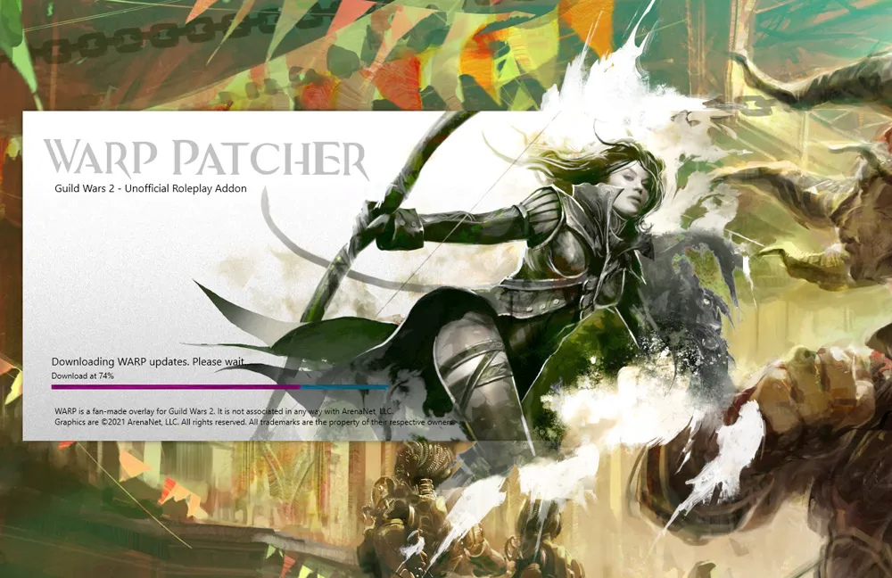
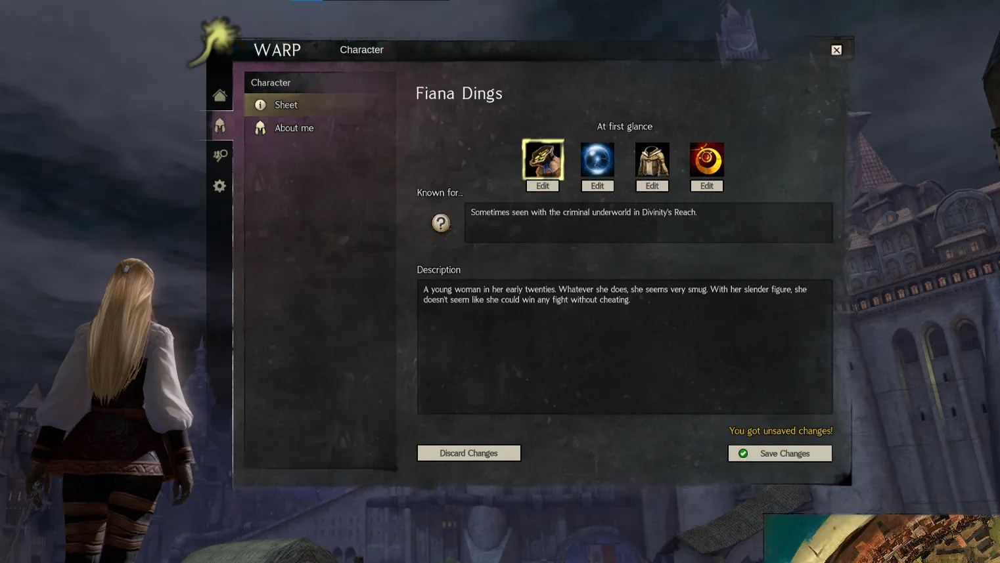
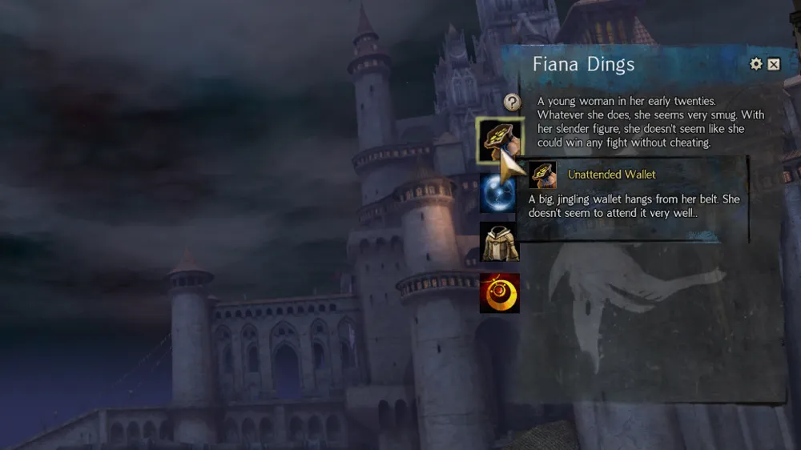
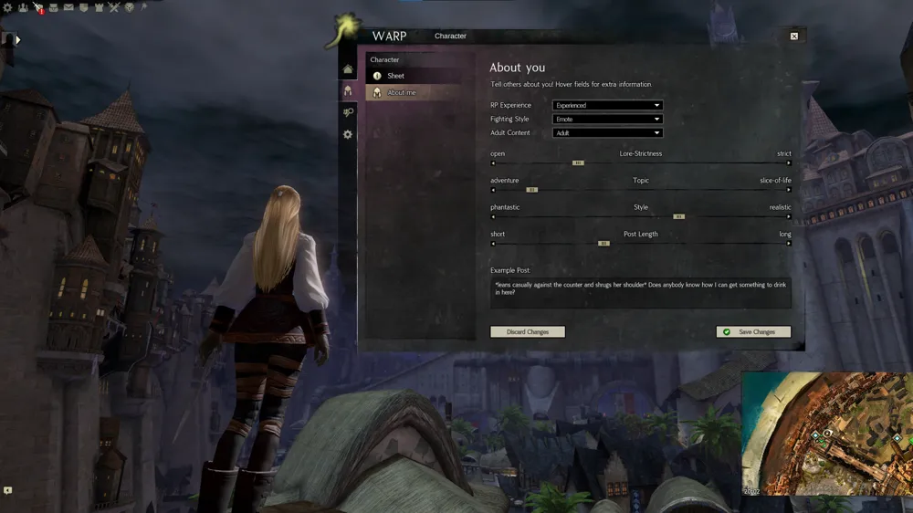
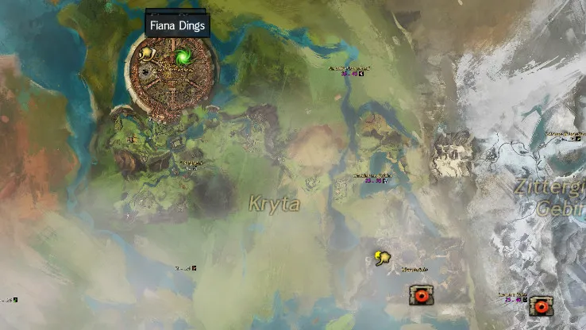
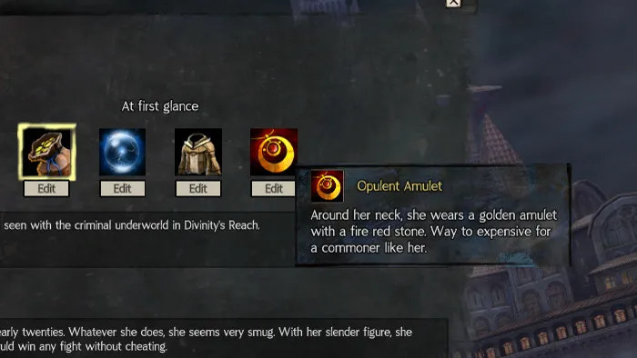
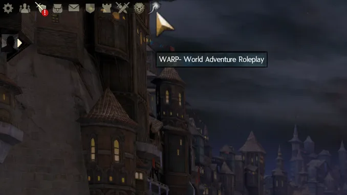

Trailer – WARP in 90 sec
Installation Guide
- Download warp_patcher.exe.
- Put it in an empty folder & start it.
- Dismiss the warning (More info → Run anyway).
Features
Profiles
Tell others about your character and your preferred RP styles!
RP Finder
See other RPers on the ingame map, then easily switch to their IP!
Need a break? Go invisible!
Immersive
We put a lot of effort in giving you the high quality look and feel that you know from Guild Wars 2!
How to use?
- Click download.
- Put the patcher file in an empty folder.
- Double-click it! It's really that simple.
WARP starts with GW2 and automagically stays updated!
Notice: The patcher might trigger a false warning from Windows. Just press “More info”, then “Run anyway”.


Feels like part of the game
WARP smoothly integrates with your other GW2 windows. It looks just like the game's own interface, so it never breaks your immersion.

See who you're playing with
View profiles by hovering their character. No need to ask for names or look anything up mid-scene.

Write about your character
Tell others about your character and your preferred RP styles!

Find other RPers on the map
See other RPers on the ingame map, then easily switch to their IP! Need a break? Go invisible!

Lots of unique customization
Show what others notice at first glance: pick icons for your character's striking traits and describe them in your own words.

Always one click away
The Will-o'-the-wisp icon sits right next to your other GW2 menu icons and opens WARP.